OUR TEAM :
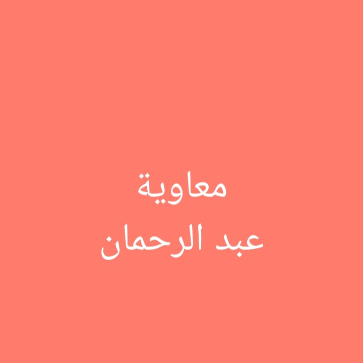Mua'awiyah Abdur-rahmaan
shaykh Mua'awiyah Abdur-rahmaan is a muslim by birth born into the family of Mr and Mrs Abdur-rahmaan,shk abdur-rahmaan happens to b one of the eid imaams in one of the masaajid in edo state, thats to tell he's from a relegious family;
shaykh Mua'awiyah completed his quranic memorization at a very young age after which he completed his western academics as an accountant from the state university of Adamawa Nigerian. in the year 2016 he started partaking in quranic competitions in edo state and have always had good records . in 2017 he came out second in the national quranic competition Nigeria.
in 2018 he particpated in a quranic competieion hosted by the "the muslim congress"(T.M.C) where he came out as the best in edo state , and was sent to lagos state to represent the state;with the power of Allah ‘Aza wa Jal he came out first position and was granted a hajj sit and other magnificient Rewards.
In the year 2019 mu'awiyah was among the the hajj pilgrims and by the grace of Allah he is now referred to as an "alhaji" in his early 20s; which made him one of the youngest alhaji in edo state ; All this are one of the blessings of Qur’an
Alhaji Mua'awiyah is not just an haafiz of the Glorious but also an expert in all qiraa'aat ; the young alhaji has sat with different scholars to learn not just riwayaat but also tafseer(quranic explanation),nahwu,fiqh and other islamic field of study. presently :the young alhaji with the name Mua'awiyah Abdur-rahmaan is the founder of one of the most prestigous islamic institute in Benin city ,( edo state , Nigeria) with the name ibn shaatibiyyah Academy.
We ask Allah S.A.W to preserve him and reward him with his blessings and mercy profusely. AmeenBilaal Miftaah El-madeniy
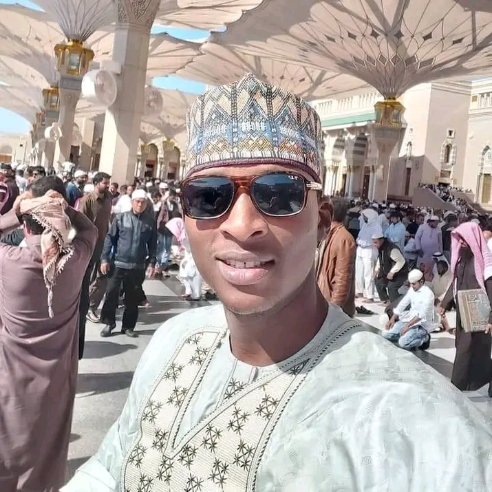Bilaal miftaah a young passionate scholar from edo state was born into a relegious family , he finished his quranic memorization at the age of 10 as one of the youngest haafiz in edo state , he afterwards went into quranic competition under the leadership of ibrahim oyarekhua and the King of the Auchi Kingdom the Otaru of Auchi;and he came out as the best among the rest in his category (the state level) , after acquiring his high school certificate he was then appointed to represent his state (edo state) as a 2hizb candidate in the national level; and with the power and mercy of Allah he came out as the best student in his category;after his return, he was granted a hajj sit by his excellency the Otaru of Auchi Kingdomfor his massive effort as an encouragement to others.
Bilaal went to hajj and applied for a scholarship opportuinty in Medinah state University; Allah made it so easy for him , that his name was choosen among over millions of applicants the following year he was admitted into Medinah State University as a student of Hadith (prophetic tradition) . He graduated years later and further went to study islamic finance in the international open University IOU .
presently:As_shaykh Bilaal Miftaah El-madenii is the founder of a prominent organization the Bilaaly Globals,he is also the C.E.O of the first online islamic savings platform Bilaaly savings where savings are categorised based on your budget and purpose of saving. He is also the founder of an eminent online islamic Academy Diyaar Academy.
We pray Allah preserve our beloved bilaaly in good health and may He grant him wealth profusely.Ameen
Abdus-saboor Adeleke
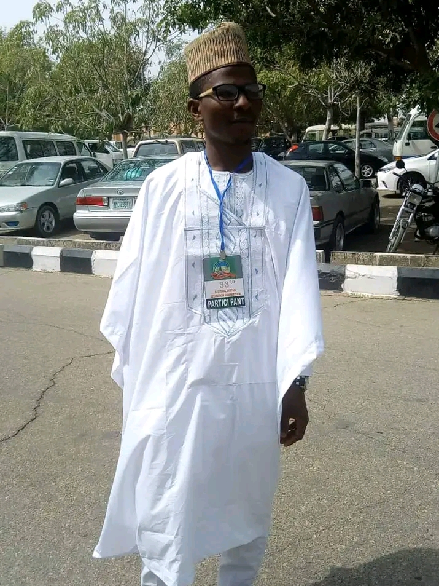
Muhammad Bilaal
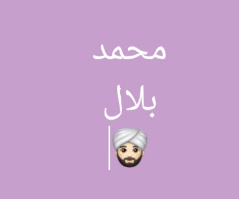Muhammad Bilaal is a passionate Nigerian scholar from Edo state; born into a very religous family,the family of Imaam Bilaal(رحمه الله). After Acquiring his SSCE result (WAEC);he gained admission into the University of Ibadan (UNIBADAN) Nigeria, to study Fundamentals of Islamic Jurespundence(علم أصول الفقه).
Presently: shk Muhammad Bilaal is a graduate of usuul-ul-fiqh and also the principal of an eminent islamic school in ibadan.
we ask Allah ‘Aza wa Jal to preserve our shk in wealth and good health profusely Ameen
Hizbullah Abbas
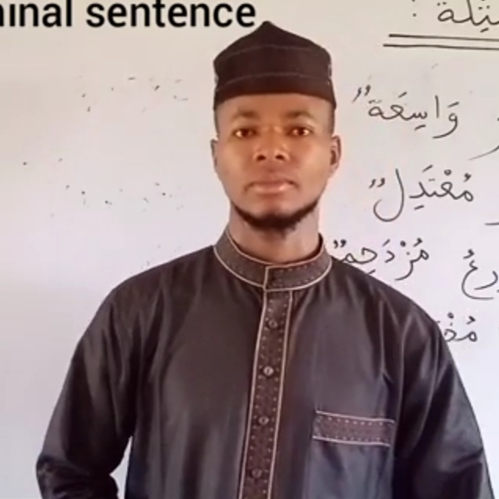Hizbullah Abbas is an ardent islamic scholar who specialize in Arabic language, born into the family Imaam Danesi one the most famous and religous Family in Edo state, Nigeria. He completed his secondary school education in an islamic college known as Hira Comprehensive college Edo state, Nigeria.He is an expert in different religous aspect ; but after his (SSCE) he went further to study Arabic language.
Presently:
Hizbullah Abbas is the founder of Muyassar Arabic Tv. We pray Allah ‘Aza wa Jal preserve and reward abundantly AmeenUkasha Awwal
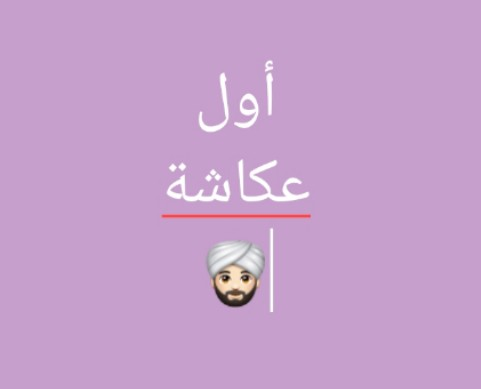Ukasha Awwal is a passionate scholar born into the family of Imaam Ukasha;which happens to be one of the most religous & respected families in Edo state.He completed his SSCE Academics at Hira Compreensive college. He is also a graduate of A.B.U zaria University, Kano; as a first class student in Human Anatomy.
presently: Awwal Ukasha is a student of the Medinah state University, Saudi Arabia. We pray Allah ‘Aza wa Jal preserve him in good Health and enrich him with massive wealth . Aameen
Ibrahim Khidr
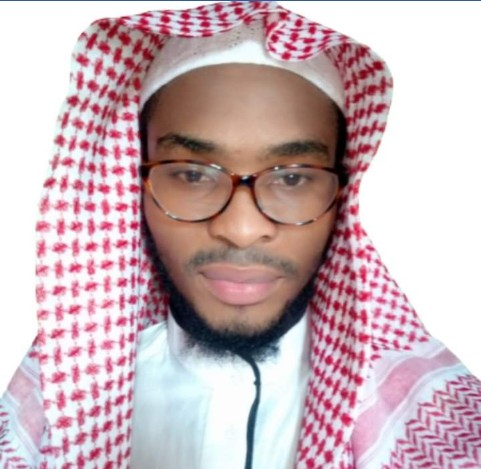Ibrahim Khidr is an ardent scholar who graduated from one of the most prestigous College; Islamic Centre Afikpo , Ebonyi state, Nigeria. he is a reseacher, an author,televangelist and more.
According to him, he has achieved lesss, compare to what his aim is, in propagating islaam across the Globe. We pray Allah ‘Aza wa Jal preserve and assist him in achieving his expectations positively. Aameen
Ismeel Richards
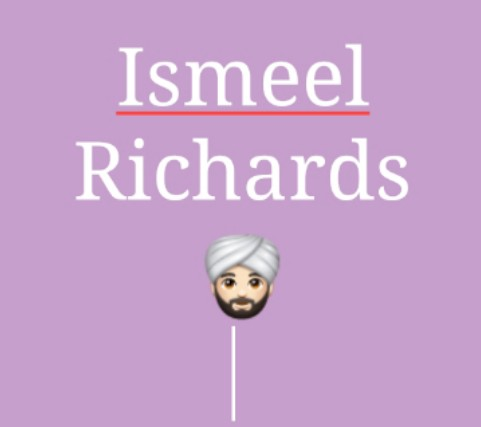Ismeel Richards a jamaican who by Allah's Might and mercy embraced islaam in the Year 2010,after that he got the opportuinty by the bounty of Allah to study under over a dozen of scholars .He is also one of the best student who graduated from madrasah fauz-ul uloom an online Academy hosted by Africans .
Presently: Ismeel Richards a civil engineer and also one the Da'awah leaders in different organizations around the World. We ask Allah ‘Aza wa Jal to preserve him in good health so he can continue call people to Allah.Aameen
Abdul-waas'i sanusi
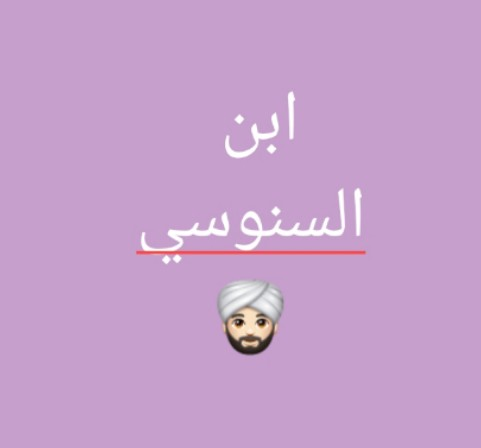Abdul-waas'i sanusi hails from ondo State.He is a global Nigerian reciter; He is a modified product of Al-falah Islamic institute. He then migrated to the state of Osun to complete his Qur'anic Memorization and also study the Seven Riwayaat in an islamic organization by the name U'lamaa-ul gadd.
presently: He is a global Reciter and one of the supervisors of the I.R institute. We pray Allah preserves him in good health. Aameen
Abdul-hameed Abbas
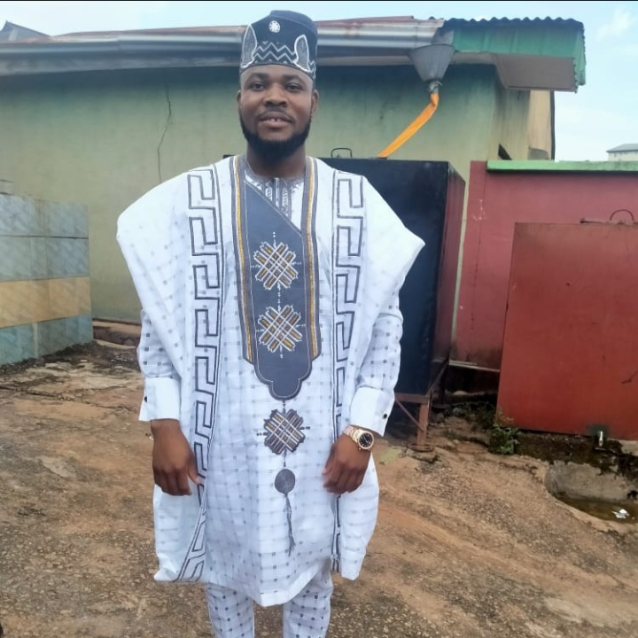Muhammad Saalis
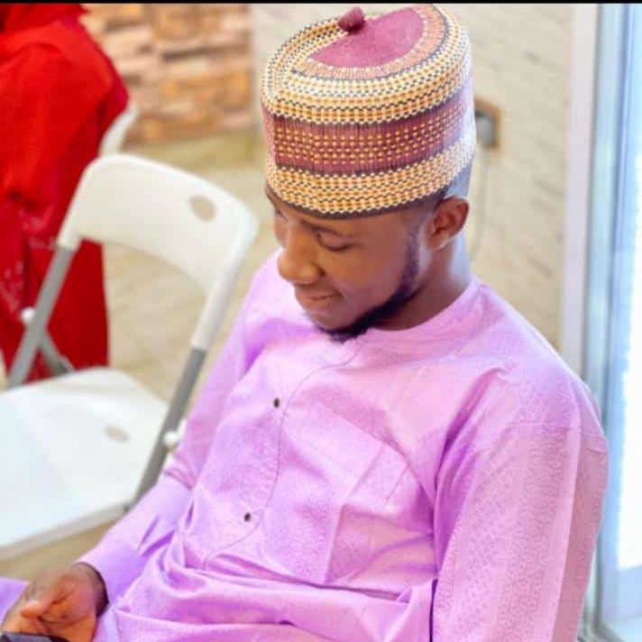Muhammad saalis is a young passionate scholar from edo state was born into a relegious family , he went into quranic competition under the leadership of Sheikh ibrahim oyarekhuaand the King of the Auchi Kingdom the Otaru of Auchi at an early age ; after few years of excelling in competing with different candidates in different categories,Muhammad saalis by the Bounty of Allah was able to complete his Qur’an as the Haafiz of the edo state musabaqah. Afterwards he graduted from Al-falah institute as one of the best.
presently:He has graduated as a first class student in accounting from the Bayero State University Nigeria. He is now an accountant and a prominent scholar. We pray Allah ‘Aza wa Jal preserves him in good health Aameen